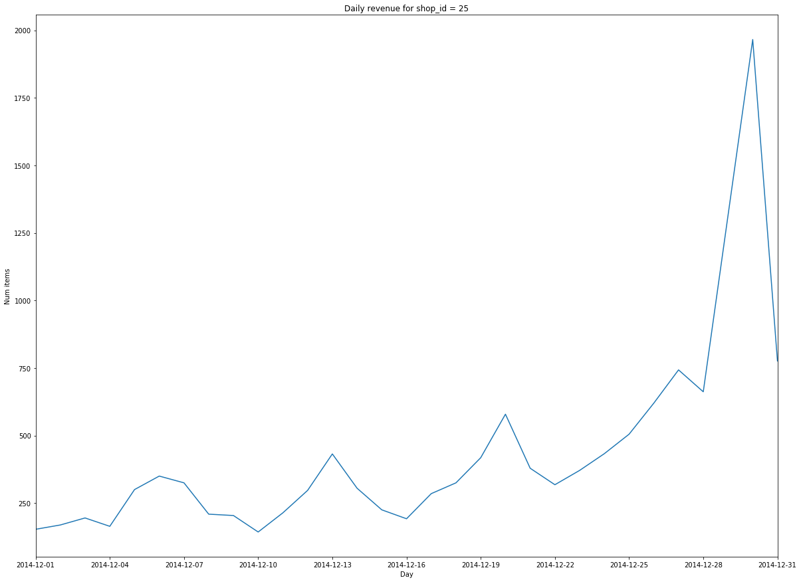

Revisiting Pandas (Yet Again)
Table of Contents
- Description
- Pandas Functions and Methods Used
- Imports
- Confirmed
- The Data
- Data Description
- A Warm Up
-
Questions
- Question 1: What was the maximum total revenue among all the shops in September, 2014?
- Question 2: What item category generated the highest revenue in the Summer of 2014?
- Question 3: How many items have the same price throughout the data set?
- Question 4: What was the variance of the number of items sold per day for shop 25 in December, 2014?
Description
This is a review of Pandas' Basics with an emphasis on using groupby.
Pandas Functions and Methods Used
Imports
Here's our dependencies.
# python standard library
import os
# from pypi
import pandas
import numpy
import matplotlib.pyplot as pyplot
import seaborn
from tabulate import tabulate
get_python().run_line_magic('matplotlib', 'inline')
Confirmed
These are values that we know to be correct so you can use them to check the outcomes.
class Confirmed:
"""This holds confirmed values"""
september_max_revenue = 7982852.199999956
september_max_category_id = 20
number_of_items_whose_price_didnt_change = 5926
variance_per_day = 117167.70229885059
The Data
We have four data-sets to load, all of them in csv format, although the file with all the transactions is compressed.
DATA_FOLDER = '../readonly/final_project_data/'
transactions = pandas.read_csv(os.path.join(DATA_FOLDER,
'sales_train.csv.gz'))
items = pandas.read_csv(os.path.join(DATA_FOLDER,
'items.csv'))
item_categories = pandas.read_csv(os.path.join(DATA_FOLDER,
'item_categories.csv'))
shops = pandas.read_csv(os.path.join(DATA_FOLDER,
'shops.csv'))
The frames dictionary is just a convenience thing to make printing the descriptive tables below a little easier.
frames = dict(transactions=transactions,
items=items,
item_categories=item_categories,
shops=shops)
Data Description
The dataset we loaded is taken from a kaggle competititon. You can find complete data description at the competition web page. To join the competition use this link. The descriptions below cover all the files, not just the ones we use here.
You are provided with daily historical sales data from what appears to be a software retailer, although that isn't explicitly stated. The task is to forecast the total amount of products sold in every shop for the test set. Note that the list of shops and products changes slightly every month. Creating a robust model that can handle such situations is part of the challenge.
File descriptions
| File Name | Description |
|---|---|
| sales_train.csv | the training set. Daily historical data from January 2013 to October 2015. |
| test.csv | the test set. You need to forecast the sales for these shops and products for November 2015. |
| sample_submission.csv | a sample submission file in the correct format. |
| items.csv | supplemental information about the items/products. |
| item_categories.csv | supplemental information about the items categories. |
| shops.csv | supplemental information about the shops. |
Data Fields
| Column | Description |
|---|---|
| ID | an Id that represents a (Shop, Item) tuple within the test set |
| shop_id | unique identifier of a shop |
| item_id | unique identifier of a product |
| item_category_id | unique identifier of item category |
| item_cnt_day | number of products sold. You are predicting a monthly amount of this measure |
| item_price | current price of an item |
| date | date in format dd/mm/yyyy |
| date_block_num | a consecutive month number, used for convenience. January 2013 is 0, February 2013 is 1,…, October 2015 is 33 |
| item_name | name of item |
| shop_name | name of shop |
| item_category_name | name of item category |
A Warm Up
Let's start with a simple task.
Print the shape of the loaded dataframes and use the df.head function to print several rows. Examine the features you are given.
print("| DataFrame | Rows| Columns|")
print("|-+-+-|")
for name, frame in frames.items():
rows, columns = frame.shape
print("|{}| {}|{}|".format(name, rows, columns))
| DataFrame | Rows | Columns |
|---|---|---|
| transactions | 2935849 | 6 |
| items | 22170 | 3 |
| item_categories | 84 | 2 |
| shops | 60 | 2 |
for name, frame in frames.items():
print("** {}".format(name))
head = frame.head()
print(tabulate(head, headers="keys", tablefmt="orgtbl", showindex=False))
transactions
| date | date_block_num | shop_id | item_id | item_price | item_cnt_day |
|---|---|---|---|---|---|
| 02.01.2013 | 0 | 59 | 22154 | 999 | 1 |
| 03.01.2013 | 0 | 25 | 2552 | 899 | 1 |
| 05.01.2013 | 0 | 25 | 2552 | 899 | -1 |
| 06.01.2013 | 0 | 25 | 2554 | 1709.05 | 1 |
| 15.01.2013 | 0 | 25 | 2555 | 1099 | 1 |
items
| item_name | item_id | item_category_id |
|---|---|---|
| ! ВО ВЛАСТИ НАВАЖДЕНИЯ (ПЛАСТ.) D | 0 | 40 |
| !ABBYY FineReader 12 Professional Edition Full [PC, Цифровая версия] | 1 | 76 |
| ***В ЛУЧАХ СЛАВЫ (UNV) D | 2 | 40 |
| ***ГОЛУБАЯ ВОЛНА (Univ) D | 3 | 40 |
| ***КОРОБКА (СТЕКЛО) D | 4 | 40 |
item_categories
| item_category_name | item_category_id |
|---|---|
| PC - Гарнитуры/Наушники | 0 |
| Аксессуары - PS2 | 1 |
| Аксессуары - PS3 | 2 |
| Аксессуары - PS4 | 3 |
| Аксессуары - PSP | 4 |
shops
| shop_name | shop_id |
|---|---|
| !Якутск Орджоникидзе, 56 фран | 0 |
| !Якутск ТЦ "Центральный" фран | 1 |
| Адыгея ТЦ "Мега" | 2 |
| Балашиха ТРК "Октябрь-Киномир" | 3 |
| Волжский ТЦ "Волга Молл" | 4 |
Unexpectedly, the names are all in cyrillic, so I guess this will be a black-box in more ways than is usual
Questions
Question 1: What was the maximum total revenue among all the shops in September, 2014?
From here on out revenue refers to total sales minus value of goods returned.
- Sometimes items are returned, find such examples in the dataset.
- It is handy to split `date` field into [`day`, `month`, `year`] components and use ` df.year
= 14` and `df.month =9` in order to select target subset of dates. - You may work with `date` feature as with srings, or you may first convert it to ` pd.datetime` type with `pd.to_datetime` function, but do not forget to set correct
formatargument.
Answer
-
Sales Per Item
First I'll add a column with the total revenue for each item (the \(price \times \textit{number sold}\)).
transactions["item_revenue"] = transactions.item_price * transactions.item_cnt_day
date_block_num shop_id item_id item_price item_cnt_day item_revenue count 2.93585e+06 2.93585e+06 2.93585e+06 2.93585e+06 2.93585e+06 2.93585e+06 mean 14.5699 33.0017 10197.2 890.853 1.24264 1157.73 std 9.42299 16.227 6324.3 1729.8 2.61883 5683.6 min 0 0 0 -1 -22 -68970 25% 7 22 4476 249 1 249 50% 14 31 9343 399 1 449 75% 23 47 15684 999 1 1078.2 max 33 59 22169 307980 2169 1.82999e+06 -
Filter Out the Month
I was originally filtering using a regular expression, but the other questions use date-filtering too so I decided to create the extra day, month, and year columns once to avoid the extra regular expression overhead later on. The
str.extractmethod uses python regular expression groups to pull out values and create columns in a DataFrame. If you use named expressions (as I do here) then it will use the names as the column-names in the dataframe.class Dates: date_expression = r'(?P<day>\d{2})\.(?P<month>\d{2})\.(?P<year>\d{4})' september = '09' december = '12' summer = ['06', '07', '08']
dates = transactions.date.str.extract(Dates.date_expression)
print(tabulate(dates.head(), headers="keys", showindex='never', tablefmt='orgtbl'))
day month year 02 01 2013 03 01 2013 05 01 2013 06 01 2013 15 01 2013 Now we can smash our new data frame onto the transactions using the concat function. by default it will try to add the rows from the second data frame to the rows of the first, but since we're adding new columns we need to pass in the
axis='columns'argument.transactions = pandas.concat((transactions, dates), axis='columns')
print(tabulate(transactions.head(), headers="keys", tablefmt="orgtbl", showindex="never"))
date date_block_num shop_id item_id item_price item_cnt_day item_revenue day month year 02.01.2013 0 59 22154 999 1 999 02 01 2013 03.01.2013 0 25 2552 899 1 899 03 01 2013 05.01.2013 0 25 2552 899 -1 -899 05 01 2013 06.01.2013 0 25 2554 1709.05 1 1709.05 06 01 2013 15.01.2013 0 25 2555 1099 1 1099 15 01 2013 first, as a sanity check, we'll make sure that all the date cells have values.
assert not transactions.date.hasnans
now let's filter on the date-expression we created for september. the next Question also uses 2014 so I'll preserve that as a separate sub-set.
twenty_fourteen = transactions[transactions.year.isin(["2014"])] september = twenty_fourteen[twenty_fourteen.month.isin([Dates.september])]
print(tabulate(september.head(), headers="keys", tablefmt="orgtbl"))
date date_block_num shop_id item_id item_price item_cnt_day item_revenue day month year 1953691 24.09.2014 20 5 1039 899 1 899 24 09 2014 1953692 27.09.2014 20 5 1015 449 1 449 27 09 2014 1953693 07.09.2014 20 5 1329 399 1 399 07 09 2014 1953694 27.09.2014 20 5 984 399 1 399 27 09 2014 1953695 08.09.2014 20 5 984 399 1 399 08 09 2014 assert all(twenty_fourteen.year == "2014") assert all(september.month == "09")
That seems like a lot of transactions. What fraction of the total is it?
rows, columns = september.shape print("{:.2f} %".format(100 * rows/transactions.shape[0]))
2.49 %
Not as much as I would have thought,
transactionsis much larger than I first took it to be.grouped = september.groupby(["shop_id"]) summed = grouped.item_revenue.agg(numpy.sum)
print(summed.head())
shop_id 2 1473540.00 3 1228425.00 4 1211556.00 5 1350828.02 6 3480397.00 Name: item_revenue, dtype: float64
max_revenue = summed.loc[summed.idxmax()] print("Highest Revenue Earned by a shop in September of 2014: $ {:,.2f}".format(max_revenue))
Highest Revenue Earned by a shop in September of 2014: $ 7,982,852.20
Question 2: What item category generated the highest revenue in the Summer of 2014?
- Submit the
idof the category found. - Here we call "summer" the period from June to August.
Hints:
Note, that for an object `x` of type `pd.Series`: `x.argmax()` returns index of the maximum element. `pd.Series` can have non-trivial index (not `[1, 2, 3, … ]`).
Get the Summer months
To filter what we want I'll use the isin method to remove every row that has a value that isn't in Dates.summer.
summer = twenty_fourteen[twenty_fourteen.month.isin(Dates.summer)]
print(tabulate(summer.head(), headers="keys", tablefmt='orgtbl'))
for month in summer.month.unique():
assert month in Dates.summer
| date | date_block_num | shop_id | item_id | item_price | item_cnt_day | item_revenue | day | month | year | item_category_id | |
|---|---|---|---|---|---|---|---|---|---|---|---|
| 1705909 | 15.06.2014 | 17 | 26 | 9532 | 399 | 1 | 399 | 15 | 06 | 2014 | 30 |
| 1705910 | 10.06.2014 | 17 | 26 | 9507 | 149 | 1 | 149 | 10 | 06 | 2014 | 40 |
| 1705911 | 13.06.2014 | 17 | 26 | 9509 | 246.32 | 1 | 246.32 | 13 | 06 | 2014 | 37 |
| 1705912 | 03.06.2014 | 17 | 26 | 9532 | 399 | 1 | 399 | 03 | 06 | 2014 | 30 |
| 1705913 | 08.06.2014 | 17 | 26 | 9532 | 399 | 1 | 399 | 08 | 06 | 2014 | 30 |
Map in the Category IDs
If you look at items.item_id you can see that the id's are really just the numerical index to the items.item_category_id series. I was originally add the category ids for all the transactions but it takes a long time so I'm just adding it to this group.
assert all(items.item_id == range(len(items)))
So we can map them back into our summer transactions.
summer["item_category_id"] = summer.item_id.apply(lambda item: items.loc[item, 'item_category_id'])
print(tabulate(summer.head(), headers='keys', tablefmt="orgtbl"))
| date | date_block_num | shop_id | item_id | item_price | item_cnt_day | item_revenue | day | month | year | item_category_id | |
|---|---|---|---|---|---|---|---|---|---|---|---|
| 1705909 | 15.06.2014 | 17 | 26 | 9532 | 399 | 1 | 399 | 15 | 06 | 2014 | 30 |
| 1705910 | 10.06.2014 | 17 | 26 | 9507 | 149 | 1 | 149 | 10 | 06 | 2014 | 40 |
| 1705911 | 13.06.2014 | 17 | 26 | 9509 | 246.32 | 1 | 246.32 | 13 | 06 | 2014 | 37 |
| 1705912 | 03.06.2014 | 17 | 26 | 9532 | 399 | 1 | 399 | 03 | 06 | 2014 | 30 |
| 1705913 | 08.06.2014 | 17 | 26 | 9532 | 399 | 1 | 399 | 08 | 06 | 2014 | 30 |
categories = summer.groupby(["item_category_id"])
categories_summed = categories.item_revenue.agg(numpy.sum)
print(categories_summed.head())
item_category_id 2 2755520.0 3 6854669.8 4 38833.2 5 418233.1 6 3360382.5 Name: item_revenue, dtype: float64
category_id_with_max_revenue = categories_summed.idxmax()
print("Category Id with the Maximum Value: {}".format(category_id_with_max_revenue))
Category Id with the Maximum Value: 20
Question 3: How many items have the same price throughout the data set?
How many items are there, such that their price stays constant (to the best of our knowledge) during the whole period of time?
Let's assume, that the items are returned for the same price as they had been sold.
Isolate the ID and Price
id_price = transactions.loc[:, ["item_id", "item_price"]]
id_price["item_price"] = id_price.item_price.abs()
group = id_price.groupby("item_id")
counts = group.item_price.nunique()
constant_prices = len([index for index in counts.index if counts.loc[index] == 1])
assert constant_prices == Confirmed.number_of_items_whose_price_didnt_change
print(constant_prices)
5926
print("Number of items whose price didn't change: {}".format(constant_prices))
Number of items whose price didn't change: 5926
Question 4: What was the variance of the number of items sold per day for shop 25 in December, 2014?
Remember, the data can sometimes be noisy. Do not count the items, that were sold but returned back later.
- Fill
total_num_items_soldanddaysarrays, and plot the sequence with the code below. - Then compute variance. Remember, there can be differences in how you normalize variance (biased or unbiased estimate, see this Stack Overflow post). Compute the unbiased estimate (use the right value for
ddofargument inpd.varornp.var).
shop_id = 25
Filter to the Shop and Dates
twenty_fives = twenty_fourteen[(transactions.shop_id==shop_id)
& (transactions.month==Dates.december)]
print(tabulate(twenty_fives.head(), headers='keys', tablefmt='orgtbl'))
assert(all(twenty_fives.shop_id == shop_id))
| date | date_block_num | shop_id | item_id | item_price | item_cnt_day | item_revenue | day | month | year | |
|---|---|---|---|---|---|---|---|---|---|---|
| 2295837 | 14.12.2014 | 23 | 25 | 21752 | 399 | 1 | 399 | 14 | 12 | 2014 |
| 2295838 | 13.12.2014 | 23 | 25 | 21752 | 399 | 3 | 1197 | 13 | 12 | 2014 |
| 2295839 | 26.12.2014 | 23 | 25 | 21733 | 149 | 1 | 149 | 26 | 12 | 2014 |
| 2295840 | 31.12.2014 | 23 | 25 | 21732 | 149 | 1 | 149 | 31 | 12 | 2014 |
| 2295841 | 30.12.2014 | 23 | 25 | 21726 | 149 | 1 | 149 | 30 | 12 | 2014 |
Group by date
shop_grouped = twenty_fives.groupby("date")
count_per_day = shop_grouped.item_cnt_day.sum()
print(count_per_day.head())
date 01.12.2014 153.0 02.12.2014 169.0 03.12.2014 195.0 04.12.2014 164.0 05.12.2014 300.0 Name: item_cnt_day, dtype: float64
Add a date-time to make it sortable for print
pandas.options.mode.chained_assignment = None
count_per_day.index = pandas.to_datetime(count_per_day.index, format="%d.%m.%Y")
print(count_per_day.head())
date 2014-12-01 153.0 2014-12-02 169.0 2014-12-03 195.0 2014-12-04 164.0 2014-12-05 300.0 Name: item_cnt_day, dtype: float64
figure = pyplot.figure(figsize=(20, 15))
axe = figure.gca()
pyplot.plot(count_per_day.index, count_per_day.values)
pyplot.ylabel('Num items')
pyplot.xlabel('Day')
axe.set_xlim([count_per_day.index[0], count_per_day.index[-1]])
title = pyplot.title("Daily revenue for shop_id = 25")


# pandas uses 1/n-1 by default, numpy uses 1/n
total_num_items_sold_var = count_per_day.var()
print("Variance for items sold per day: {}".format(total_num_items_sold_var))
Variance for items sold per day: 117167.70229885059